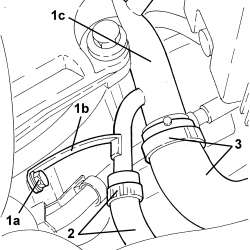
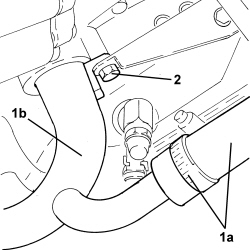

1088D06 THREE-WAY CONNECTOR BETWEEN RADIATOR AND THERMOSTAT
- Path
- Procedures > 10 ENGINE > 1088 ENGINE COOLING > 1088D COOLANT PIPES AND HOSES > 1088D06 THREE-WAY CONNECTOR BETWEEN RADIATOR AND THERMOSTAT
- Kind
- repair procedure (removal / refitting; the operation number is the code)
- Applies to
- engines: 3.2 JTS; all production periods
- Interactive page
- https://sloeber94.github.io/elrnDB/alfa/159/en/#/939005291
Applies to: engines: 3.2 JTS; all production periods
 Removing
Removing
 Refitting
RefittingOp. 0010T20 ENGINE COOLANT - CHANGE
1. Undo the bolt (1a) fixing the bracket (1b) for the three-way connector between the radiator and the thermostat (1c).
2. Loosen the band and disconnect the supply pipe to the engine oil heat exchanger.
3. Loosen the band and disconnect the radiator supply pipe.

Applies to: engines: 3.2 JTS; all production periods
1. Loosen the band and disconnect the engine cooling system supply pipe (1a) from the three-way connector between the radiator and the thermostat (1b).
2. Undo the bolt fixing the three-way connector between the radiator and the thermostat (1b) and disconnect it from the thermostat.
- Remove the O-ring from the three-way connector between the radiator and the thermostat.

Applies to: engines: 3.2 JTS; all production periods
Refitting
Removing- Connect the three-way connector between the radiator and the thermostat to the thermostat complete with a new O-ring and secure it using the bolt.
- Connect the engine cooling system supply pipe to the three-way connector between the radiator and the thermostat and secure it using the band.
- Connect the supply pipe to the radiator using the band.
- Connect supply pipe to the engine oil heat exchanger using the band.
- Tighten the bolt fixing the bracket for the three-way connector between the radiator and the thermostat .